Familles d'indicateurs - Référentiel complet
Pascal Obstétar
2026-06-16
Source:vignettes/indicator-families_fr.Rmd
indicator-families_fr.RmdIntroduction
Le package nemeton structure l’évaluation des services
écosystémiques forestiers autour de 12 familles
d’indicateurs couvrant les dimensions biophysiques, écologiques
et socio-économiques. Cette vignette présente le référentiel complet et
démontre l’utilisation du système de familles.
Référentiel des 12 familles
Vue d’ensemble
| Code | Famille | Description | Nb indicateurs |
|---|---|---|---|
| C | Carbone & Vitalité | Stock carbone et santé végétation | 2 |
| B | Biodiversité | Diversité structurelle et habitats | 3 |
| W | Eau | Régulation hydrique | 3 |
| A | Air & Microclimat | Qualité de l’air et régulation climatique | 2 |
| F | Fertilité des sols | Qualité pédologique et érosion | 2 |
| L | Landscape (Paysage) | Structure et connectivité paysagère | 3 |
| T | Temps & Dynamique | Ancienneté et trajectoires | 2 |
| R | Risques | Vulnérabilité aux perturbations | 3 |
| S | Social & Usages | Accessibilité et services récréatifs | 3 |
| P | Production | Productivité forestière | 3 |
| E | Énergie | Potentiel énergétique et climat | 2 |
| N | Naturalité | Degré de naturalité | 3 |
Données de démonstration avec 12 familles
Pour cette vignette, nous créons un jeu de données complet avec tous les indicateurs des 12 familles.
# Charger les données de base
data(massif_demo_units)
set.seed(42)
n <- nrow(massif_demo_units)
# Créer les indicateurs pour chaque famille
demo_data <- massif_demo_units
# Famille C - Carbone & Vitalité
demo_data$C1 <- runif(n, 80, 250) # Biomasse carbone (tC/ha)
demo_data$C2 <- runif(n, 0.5, 0.9) # NDVI (vitalité)
# Famille B - Biodiversité
demo_data$B1 <- sample(0:3, n, replace = TRUE) # Protection (0-3)
demo_data$B2 <- runif(n, 0.5, 2.5) # Diversité structurelle (Shannon)
demo_data$B3 <- runif(n, 0.2, 0.95) # Connectivité (0-1)
# Famille W - Eau
demo_data$W1 <- runif(n, 10, 100) # Densité réseau hydro (m/ha)
demo_data$W2 <- runif(n, 0, 40) # % zones humides
demo_data$W3 <- runif(n, 5, 15) # TWI
# Famille A - Air & Microclimat
demo_data$A1 <- runif(n, 0.4, 0.95) # Couverture arborée buffer 1km
demo_data$A2 <- runif(n, 50, 95) # Qualité air
# Famille F - Fertilité sols
demo_data$F1 <- sample(1:5, n, replace = TRUE, prob = c(0.1, 0.3, 0.35, 0.2, 0.05))
demo_data$F2 <- runif(n, 0, 25) # Pente % (risque érosion)
# Famille L - Paysage
demo_data$L1 <- runif(n, 0.1, 0.8) # Fragmentation (0-1, faible = mieux)
demo_data$L2 <- runif(n, 0.05, 0.35) # Ratio lisière
# Famille T - Temps & Dynamique
demo_data$T1 <- demo_data$age # Ancienneté (années)
demo_data$T2 <- runif(n, 0, 5) # Taux changement (%/an)
# Famille R - Risques (échelle 0-100)
demo_data$R1 <- runif(n, 5, 80) # Risque incendie
demo_data$R2 <- runif(n, 10, 70) # Risque tempête
demo_data$R3 <- runif(n, 15, 75) # Stress hydrique
demo_data$R4 <- runif(n, 10, 65) # Risque abroutissement
# Famille S - Social & Usages
demo_data$S1 <- runif(n, 0, 5) # Densité sentiers (km/ha)
demo_data$S2 <- runif(n, 20, 100) # Score accessibilité
demo_data$S3 <- runif(n, 500, 50000) # Population proximité
# Famille P - Production
demo_data$P1 <- demo_data$volume # Volume sur pied (m³/ha)
demo_data$P2 <- runif(n, 3, 15) # Productivité (m³/ha/an)
demo_data$P3 <- runif(n, 40, 95) # Qualité bois
# Famille E - Énergie
demo_data$E1 <- runif(n, 1, 10) # Potentiel bois-énergie (t/an)
demo_data$E2 <- runif(n, 5, 50) # Évitement CO2 (tCO2eq/an)
# Famille N - Naturalité
demo_data$N1 <- runif(n, 100, 3000) # Distance infrastructure (m)
demo_data$N2 <- runif(n, 5, 100) # Continuité forestière (ha)
demo_data$N3 <- runif(n, 20, 95) # Score naturalité composite
cat("Dataset avec", n, "parcelles et 29 indicateurs\n")
#> Dataset avec 20 parcelles et 29 indicateursIndicateurs par famille
Famille C : Carbone & Vitalité
ggplot(demo_data |> st_drop_geometry()) +
geom_point(aes(x = C1, y = C2, color = forest_type), size = 3, alpha = 0.7) +
labs(
title = "Famille C - Carbone & Vitalité",
x = "C1: Stock carbone (tC/ha)",
y = "C2: NDVI (vitalité)",
color = "Type forestier"
) +
theme_minimal() +
theme(legend.position = "bottom")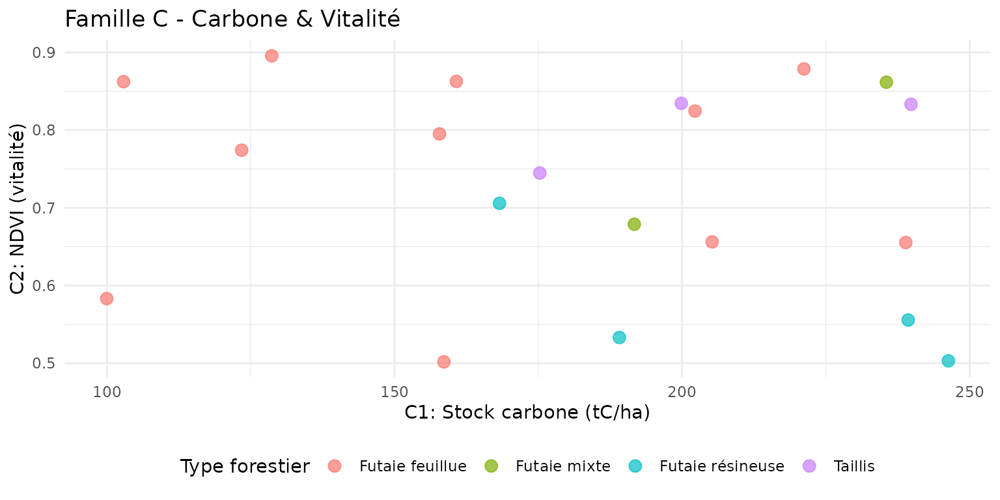
Interprétation : - C1 > 100 tC/ha : Fort stock de carbone - C2 (NDVI) > 0.7 : Végétation très active
Famille W : Eau
library(tidyr)
demo_data |>
st_drop_geometry() |>
select(parcel_id, W1, W2, W3) |>
pivot_longer(cols = c(W1, W2, W3), names_to = "indicator", values_to = "value") |>
ggplot(aes(x = indicator, y = value, fill = indicator)) +
geom_boxplot(alpha = 0.7) +
scale_fill_manual(
values = c(W1 = "#00838F", W2 = "#0097A7", W3 = "#26C6DA"),
labels = c("Réseau hydro (m/ha)", "Zones humides (%)", "TWI")
) +
labs(
title = "Famille W - Distribution des indicateurs Eau",
x = "Indicateur",
y = "Valeur"
) +
theme_minimal() +
theme(legend.position = "none")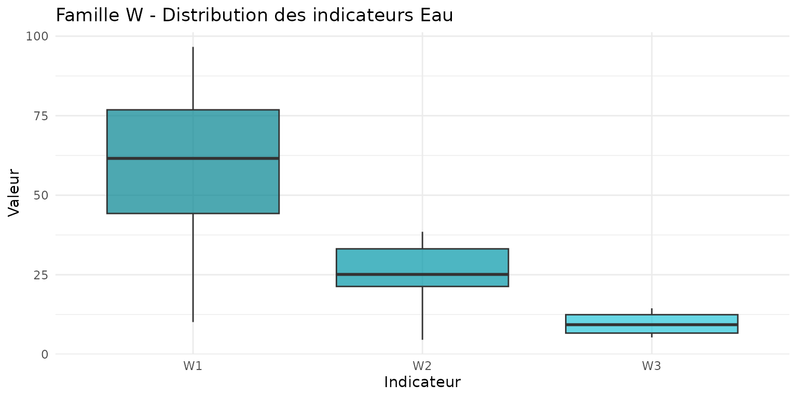
Interprétation : - W1 > 50 m/ha : Dense réseau hydrographique - W2 > 20% : Zone humide significative - W3 > 10 : Fort potentiel d’accumulation d’eau
Famille B : Biodiversité
ggplot(demo_data) +
geom_sf(aes(fill = B2), color = "white", linewidth = 0.3) +
scale_fill_viridis_c(name = "Shannon\n(diversité)", option = "D") +
labs(
title = "B2 - Diversité structurelle",
subtitle = "Indice de Shannon des strates et âges"
) +
theme_minimal() +
theme(axis.text = element_blank(), axis.ticks = element_blank())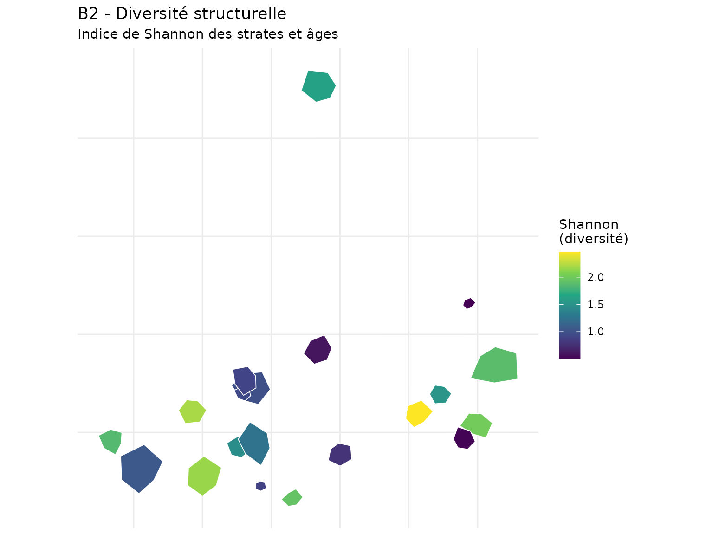
Famille R : Risques
demo_data |>
st_drop_geometry() |>
select(parcel_id, R1, R2, R3, R4) |>
tidyr::pivot_longer(cols = c(R1, R2, R3, R4), names_to = "indicator", values_to = "value") |>
ggplot(aes(x = indicator, y = value, fill = indicator)) +
geom_boxplot(alpha = 0.8) +
scale_fill_brewer(palette = "YlOrRd") +
labs(
title = "Famille R - Distribution des risques",
x = "Indicateur",
y = "Score (0-100)",
fill = "Indicateur"
) +
theme_minimal()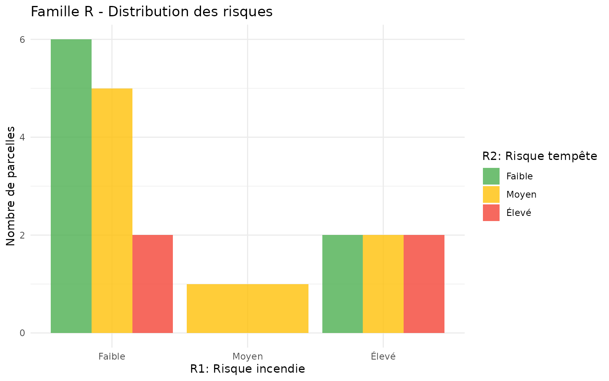
Interprétation : - R1, R2, R3, R4 > 60 : Vulnérabilité élevée - Risques cumulés (≥2 indicateurs élevés) : Priorité gestion préventive
Normalisation des indicateurs
Normalisons les indicateurs pour les rendre comparables (échelle 0-100).
# Indicateurs à normaliser
indicators_to_norm <- c("C1", "C2", "B2", "B3", "W1", "W2", "W3",
"A1", "A2", "S1", "S2", "P1", "P2", "P3",
"E1", "E2", "N1", "N2", "N3")
# Normalisation min-max
demo_norm <- demo_data
for (ind in indicators_to_norm) {
values <- demo_norm[[ind]]
min_val <- min(values, na.rm = TRUE)
max_val <- max(values, na.rm = TRUE)
demo_norm[[paste0(ind, "_norm")]] <- (values - min_val) / (max_val - min_val) * 100
}
# Indicateurs inversés (faible = mieux)
inv_indicators <- c("L1", "L2", "T2", "F2")
for (ind in inv_indicators) {
values <- demo_norm[[ind]]
min_val <- min(values, na.rm = TRUE)
max_val <- max(values, na.rm = TRUE)
demo_norm[[paste0(ind, "_norm")]] <- (1 - (values - min_val) / (max_val - min_val)) * 100
}
# Indicateurs catégoriels transformés
# F1: 1 (très fertile) = 100, 5 (très pauvre) = 20
demo_norm$F1_norm <- (6 - demo_norm$F1) / 4 * 80 + 20
# R1-R4: déjà en 0-100, inverser (faible risque = meilleur score)
demo_norm$R1_norm <- 100 - demo_norm$R1
demo_norm$R2_norm <- 100 - demo_norm$R2
demo_norm$R3_norm <- 100 - demo_norm$R3
demo_norm$R4_norm <- 100 - demo_norm$R4
# B1: 0 = 0, 3 = 100
demo_norm$B1_norm <- demo_norm$B1 / 3 * 100
# T1: log transformation pour ancienneté
demo_norm$T1_norm <- pmin(100, log(demo_norm$T1 + 1) / log(200) * 100)
cat("Indicateurs normalisés créés\n")
#> Indicateurs normalisés créésIndices composites par famille
Créons des indices agrégés pour chaque famille.
# Calculer les indices de famille
demo_norm$famille_carbone <- (demo_norm$C1_norm + demo_norm$C2_norm) / 2
demo_norm$famille_biodiversite <- (demo_norm$B1_norm + demo_norm$B2_norm + demo_norm$B3_norm) / 3
demo_norm$famille_eau <- (demo_norm$W1_norm + demo_norm$W2_norm + demo_norm$W3_norm) / 3
demo_norm$famille_air <- (demo_norm$A1_norm + demo_norm$A2_norm) / 2
demo_norm$famille_sol <- (demo_norm$F1_norm + demo_norm$F2_norm) / 2
demo_norm$famille_paysage <- (demo_norm$L1_norm + demo_norm$L2_norm) / 2
demo_norm$famille_temporel <- (demo_norm$T1_norm + demo_norm$T2_norm) / 2
demo_norm$famille_risque <- (demo_norm$R1_norm + demo_norm$R2_norm + demo_norm$R3_norm + demo_norm$R4_norm) / 4
demo_norm$famille_social <- (demo_norm$S1_norm + demo_norm$S2_norm) / 2
demo_norm$famille_production <- (demo_norm$P1_norm + demo_norm$P2_norm + demo_norm$P3_norm) / 3
demo_norm$famille_energie <- (demo_norm$E1_norm + demo_norm$E2_norm) / 2
demo_norm$famille_naturalite <- (demo_norm$N1_norm + demo_norm$N2_norm + demo_norm$N3_norm) / 3
# Afficher les scores moyens par famille
family_means <- demo_norm |>
st_drop_geometry() |>
summarise(across(starts_with("famille_"), mean, na.rm = TRUE)) |>
pivot_longer(everything(), names_to = "famille", values_to = "mean_score") |>
mutate(famille = gsub("famille_", "", famille)) |>
arrange(desc(mean_score))
family_means
#> # A tibble: 12 × 2
#> famille mean_score
#> <chr> <dbl>
#> 1 sol 75.3
#> 2 temporel 70.8
#> 3 risque 58.8
#> 4 paysage 57.6
#> 5 carbone 57.4
#> 6 eau 55.2
#> 7 biodiversite 51.2
#> 8 naturalite 47.2
#> 9 air 46.6
#> 10 production 44.4
#> 11 social 44.1
#> 12 energie 40.9Visualisation multi-famille
Radar chart 12 familles
La fonction nemeton_radar() avec
mode = "family" permet de visualiser le profil complet
d’une parcelle sur les 12 familles :
# Radar pour une parcelle (mode famille)
nemeton_radar(
demo_norm,
unit_id = "P01",
mode = "family",
title = "Profil écosystémique - Parcelle P01"
)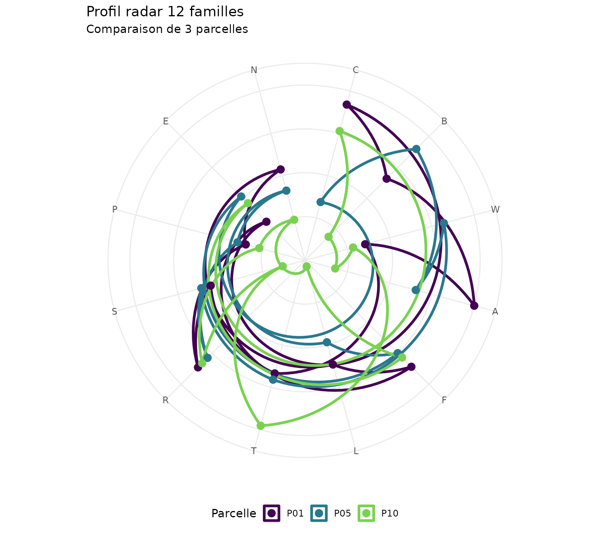
Comparaison de plusieurs parcelles
# Comparer plusieurs parcelles sur le même radar
nemeton_radar(
demo_norm,
unit_id = c("P01", "P05", "P10"),
mode = "family",
title = "Comparaison de 3 parcelles - 12 familles"
)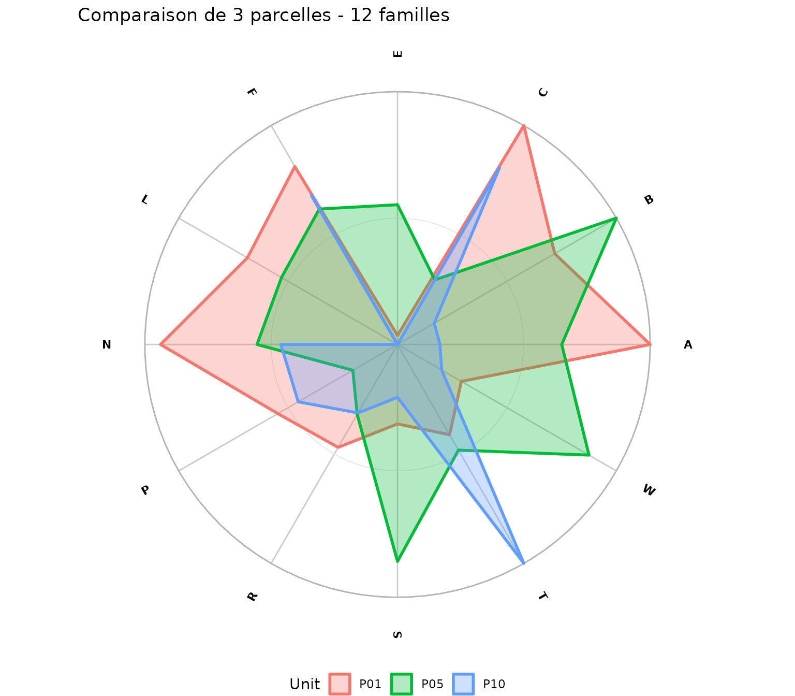
Cartes des scores de famille
# Préparer les données pour les cartes
map_data <- demo_norm |>
select(parcel_id, famille_carbone, famille_biodiversite, famille_eau, famille_production, geometry) |>
pivot_longer(
cols = starts_with("famille_"),
names_to = "family",
values_to = "score"
) |>
mutate(family = case_when(
family == "famille_carbone" ~ "Carbone",
family == "famille_biodiversite" ~ "Biodiversité",
family == "famille_eau" ~ "Eau",
family == "famille_production" ~ "Production"
))
ggplot(map_data) +
geom_sf(aes(fill = score), color = "white", linewidth = 0.3) +
facet_wrap(~family, ncol = 2) +
scale_fill_viridis_c(name = "Score\n(0-100)", option = "D") +
labs(
title = "Scores par famille de services écosystémiques",
subtitle = "4 familles clés : Carbone, Biodiversité, Eau, Production"
) +
theme_minimal() +
theme(
axis.text = element_blank(),
axis.ticks = element_blank(),
strip.text = element_text(face = "bold", size = 11)
)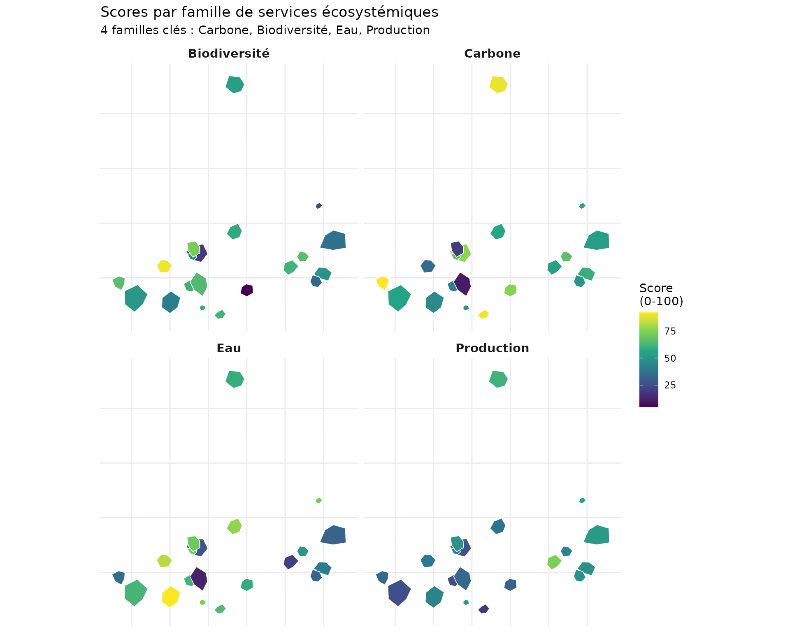
Analyse croisée inter-familles
Matrice de corrélations
# Extraire les scores de famille
family_scores <- demo_norm |>
st_drop_geometry() |>
select(starts_with("famille_"))
# Renommer pour lisibilité
names(family_scores) <- gsub("famille_", "", names(family_scores))
# Calculer la matrice de corrélation
cor_matrix <- cor(family_scores, use = "complete.obs")
# Préparer pour ggplot
cor_data <- as.data.frame(as.table(cor_matrix))
names(cor_data) <- c("Family1", "Family2", "Correlation")
ggplot(cor_data, aes(x = Family1, y = Family2, fill = Correlation)) +
geom_tile(color = "white") +
geom_text(aes(label = sprintf("%.2f", Correlation)), size = 3) +
scale_fill_gradient2(
low = "#2166AC",
mid = "white",
high = "#B2182B",
midpoint = 0,
limits = c(-1, 1)
) +
labs(
title = "Corrélations entre familles d'indicateurs",
subtitle = "Rouge = synergies, Bleu = trade-offs",
x = "", y = ""
) +
theme_minimal() +
theme(
axis.text.x = element_text(angle = 45, hjust = 1),
panel.grid = element_blank()
)Interprétation : - Corrélation positive (rouge) : Synergies (ex: Carbone × Production) - Corrélation négative (bleu) : Conflits/trade-offs - Corrélation faible (blanc) : Indépendance
Scatter plot des synergies/conflits
ggplot(demo_norm |> st_drop_geometry(), aes(x = famille_carbone, y = famille_biodiversite)) +
geom_point(aes(color = famille_production, size = famille_naturalite), alpha = 0.7) +
geom_smooth(method = "lm", se = TRUE, color = "gray40", linetype = "dashed") +
scale_color_viridis_c(name = "Production", option = "D") +
scale_size_continuous(name = "Naturalité", range = c(2, 8)) +
labs(
title = "Synergies Carbone-Biodiversité",
subtitle = "Taille = naturalité, Couleur = production",
x = "Score Carbone (famille C)",
y = "Score Biodiversité (famille B)"
) +
theme_minimal()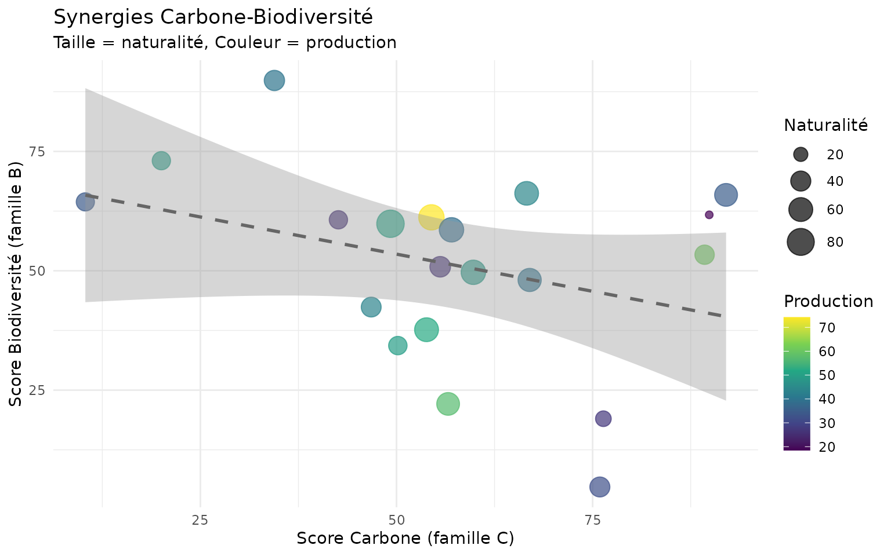
Identification de hotspots multi-services
# Identifier les parcelles excellentes sur plusieurs familles
threshold <- 60 # Top 40%
demo_norm <- demo_norm |>
mutate(
high_C = famille_carbone >= threshold,
high_B = famille_biodiversite >= threshold,
high_W = famille_eau >= threshold,
high_N = famille_naturalite >= threshold,
high_P = famille_production >= threshold,
hotspot_count = high_C + high_B + high_W + high_N + high_P,
is_hotspot = hotspot_count >= 3
)
# Cartographier les hotspots
ggplot(demo_norm) +
geom_sf(aes(fill = factor(hotspot_count)), color = "white", linewidth = 0.5) +
scale_fill_manual(
values = c("0" = "#FFEBEE", "1" = "#FFCDD2", "2" = "#EF9A9A",
"3" = "#E57373", "4" = "#EF5350", "5" = "#C62828"),
name = "Familles\nélevées"
) +
labs(
title = "Hotspots multi-services écosystémiques",
subtitle = sprintf("Seuil = %d/100 (5 familles: C, B, W, N, P)", threshold)
) +
theme_minimal() +
theme(
axis.text = element_blank(),
axis.ticks = element_blank(),
legend.position = "right"
)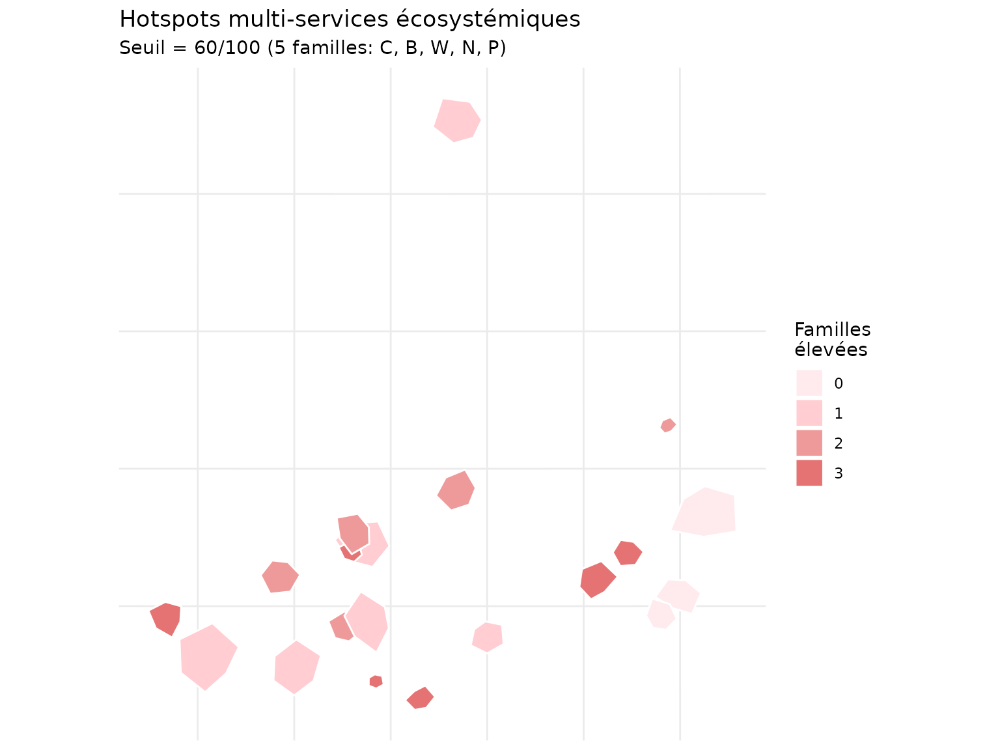
Statistiques des hotspots
hotspot_stats <- demo_norm |>
st_drop_geometry() |>
group_by(hotspot_count) |>
summarise(
n_parcelles = n(),
surface_totale = round(sum(surface_ha), 1),
C_mean = round(mean(famille_carbone), 1),
B_mean = round(mean(famille_biodiversite), 1),
P_mean = round(mean(famille_production), 1),
.groups = "drop"
)
hotspot_stats
#> # A tibble: 4 × 6
#> hotspot_count n_parcelles surface_totale C_mean B_mean P_mean
#> <int> <int> <dbl> <dbl> <dbl> <dbl>
#> 1 0 3 26.9 54.6 40.6 47.9
#> 2 1 6 64.8 59 39.1 34.8
#> 3 2 5 24.1 42.1 60.9 43.8
#> 4 3 6 20.3 69.9 60.5 52.7Indice global multi-famille
# Créer un indice global pondéré
demo_norm <- demo_norm |>
mutate(
ecosystem_index = (
famille_carbone * 0.15 + # Carbone
famille_biodiversite * 0.15 + # Biodiversité
famille_eau * 0.10 + # Eau
famille_air * 0.05 + # Air
famille_sol * 0.05 + # Fertilité
famille_paysage * 0.05 + # Paysage
famille_temporel * 0.05 + # Temporel
famille_risque * 0.10 + # Risques (résilience)
famille_social * 0.05 + # Social
famille_production * 0.10 + # Production
famille_energie * 0.05 + # Énergie
famille_naturalite * 0.10 # Naturalité
)
)
# Carte de l'indice global
ggplot(demo_norm) +
geom_sf(aes(fill = ecosystem_index), color = "white", linewidth = 0.3) +
scale_fill_viridis_c(
name = "Indice\nglobal",
option = "D"
) +
labs(
title = "Indice de services écosystémiques global",
subtitle = "Agrégation pondérée des 12 familles"
) +
theme_minimal() +
theme(
axis.text = element_blank(),
axis.ticks = element_blank()
)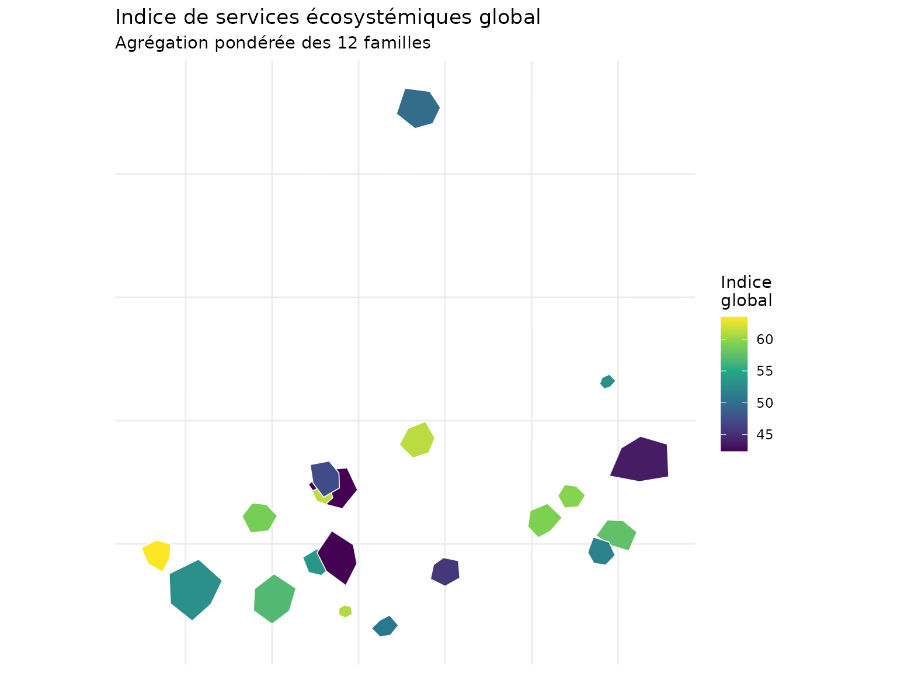
Distribution de l’indice global
ggplot(demo_norm |> st_drop_geometry(), aes(x = ecosystem_index)) +
geom_histogram(bins = 10, fill = "#2E7D32", alpha = 0.7, color = "white") +
geom_vline(
aes(xintercept = mean(ecosystem_index)),
color = "red",
linetype = "dashed",
linewidth = 1
) +
annotate("text", x = mean(demo_norm$ecosystem_index) + 3, y = 4,
label = sprintf("Moyenne: %.1f", mean(demo_norm$ecosystem_index)),
color = "red", fontface = "bold") +
labs(
title = "Distribution de l'indice global",
x = "Score (0-100)",
y = "Nombre de parcelles"
) +
theme_minimal()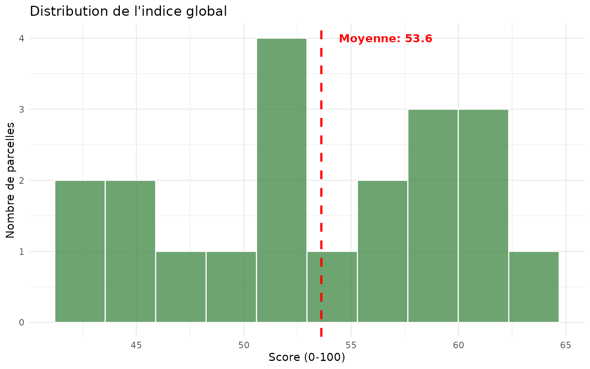
Bonnes pratiques
Choix des indicateurs
- Sélectionner les indicateurs pertinents pour les objectifs de gestion
- Vérifier la disponibilité des données (rasters, vecteurs, attributs)
- Éviter la redondance entre indicateurs d’une même famille
Références
- Guide de démarrage :
vignette("getting-started_fr") - Analyse temporelle :
vignette("temporal-analysis_fr") - Optimisation multi-critère :
vignette("multi-criteria-optimization_fr")
Session Info
sessionInfo()
#> R version 4.6.0 (2026-04-24)
#> Platform: x86_64-pc-linux-gnu
#> Running under: Ubuntu 24.04.4 LTS
#>
#> Matrix products: default
#> BLAS: /usr/lib/x86_64-linux-gnu/openblas-pthread/libblas.so.3
#> LAPACK: /usr/lib/x86_64-linux-gnu/openblas-pthread/libopenblasp-r0.3.26.so; LAPACK version 3.12.0
#>
#> locale:
#> [1] LC_CTYPE=C.UTF-8 LC_NUMERIC=C LC_TIME=C.UTF-8
#> [4] LC_COLLATE=C.UTF-8 LC_MONETARY=C.UTF-8 LC_MESSAGES=C.UTF-8
#> [7] LC_PAPER=C.UTF-8 LC_NAME=C LC_ADDRESS=C
#> [10] LC_TELEPHONE=C LC_MEASUREMENT=C.UTF-8 LC_IDENTIFICATION=C
#>
#> time zone: UTC
#> tzcode source: system (glibc)
#>
#> attached base packages:
#> [1] stats graphics grDevices utils datasets methods base
#>
#> other attached packages:
#> [1] tidyr_1.3.2 sf_1.1-1 dplyr_1.2.1
#> [4] ggplot2_4.0.3 nemeton_0.88.0.9000
#>
#> loaded via a namespace (and not attached):
#> [1] utf8_1.2.6 sass_0.4.10 generics_0.1.4 class_7.3-23
#> [5] KernSmooth_2.23-26 lattice_0.22-9 digest_0.6.39 magrittr_2.0.5
#> [9] evaluate_1.0.5 grid_4.6.0 RColorBrewer_1.1-3 fastmap_1.2.0
#> [13] Matrix_1.7-5 jsonlite_2.0.0 e1071_1.7-17 DBI_1.3.0
#> [17] mgcv_1.9-4 purrr_1.2.2 viridisLite_0.4.3 scales_1.4.0
#> [21] codetools_0.2-20 textshaping_1.0.5 jquerylib_0.1.4 cli_3.6.6
#> [25] rlang_1.2.0 units_1.0-1 splines_4.6.0 withr_3.0.2
#> [29] cachem_1.1.0 yaml_2.3.12 otel_0.2.0 tools_4.6.0
#> [33] vctrs_0.7.3 R6_2.6.1 proxy_0.4-29 lifecycle_1.0.5
#> [37] classInt_0.4-11 fs_2.1.0 htmlwidgets_1.6.4 ragg_1.5.2
#> [41] pkgconfig_2.0.3 desc_1.4.3 pkgdown_2.2.0 terra_1.9-27
#> [45] bslib_0.11.0 pillar_1.11.1 gtable_0.3.6 glue_1.8.1
#> [49] Rcpp_1.1.1-1.1 systemfonts_1.3.2 xfun_0.58 tibble_3.3.1
#> [53] tidyselect_1.2.1 knitr_1.51 farver_2.1.2 nlme_3.1-169
#> [57] htmltools_0.5.9 rmarkdown_2.31 labeling_0.4.3 compiler_4.6.0
#> [61] S7_0.2.2